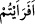
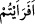

hacca gelen insanlara yağ ile kavutu döğüp bulayarak ikrâm edermiş. Araplar da her hac
mevsiminde hizmeti, ikrâmı bulunan bu kişiyi sayarlarmış. Bu adam öldüğü zaman,
hacılara kavut ikram ettiği yer, müşriklerin hacdaki ibâdetgâhlarından biri hâlini aldı.
Daha sonra onun bu mekânı uğur getireceği inancıyla insanlar tarafından ziyaret
edilmeye başlandı. Ancak orayı ziyaret edenler, buranın üst kısmına yerleştirilen ve
kavut yemeği yapan adama izâfetle Lât adını verdikleri kayadan yapılma puta
tapmaksızın ayrılmıyorlardı. Bu olay binlerce hadis ve tefsirde nakledilmiştir.”
Yukarıdaki mânâ takdirleri, “Lât” kelimesindeki “te” harfinin şeddeli olarak
okunmasından çıkmaktadır.
Kâmûs’ta belirtildiği üzere İbn Abbâs, İkrime ve bir grup (kıraat imâmı) böyle
şeddeli olarak okumuşlardır. Müşrikler bu putlara ibâdetlerinin yanı sıra: “melekler ve
bu putlar Allah’ın kızlarıdır” diyorlardı. İşte onları azarlamak ve susturmak için; “
/eferaeytüm/gördünüz mü, ne dersiniz?” buyurmuştur. “
/Eferaeytüm” kelimesindeki
“hemze” inkâriyye hemzesi olup, “fe” harfi de Allah Teâlâ’nın kendisine nisbet edilen
şeylerden son derece uzak bir konumda olduğunu beyân için “görme” fiilinin tertibine
tevcîh makamında gelen bir harftir. Âyetin mânâsı: “Allah’ın mülkü, melekûtu, celâli,
ceberûtu, kudretinin sağlamlığında ve mele-i â’la ile yerin altındakilere ve bu ikisi
arasında kalanlara söz geçirmesindeki kemâl-i azâmetinin eserlerini duymanızın
akabinde mi son derece hakîr bir halde bulunan bu putların Allah’ın kızları olduğuna
i’tikad ettiniz?” takdirindedir.
Bazı âlimler de şöyle demiştir; “Müşrikler meleklerin Allah’ın kızları olduğunu ve
kendi putlarının da Allah’ın kızları olan bu güzel sûretli mahlûkların kendi içerisinde
barındığı dişi melek heykelleri olduğunu ileri sürmüşlerdir.”
et-Te’vilâtü’n-Necmiyye’de de şöyle zikrolunur: “Âyet-i kerîme’de putperestler
muhatab alınmakta; Lât putunun nefse, Uzzâ putunun hevâya, Menât putunun da en
değersiz ve aşağı bir konumda bulunması sebebiyle, kötü ve hakir olan dünyaya işâret
ettiği belirtilmektedir. Müşriklerin söylediklerini inkâr etme ve onları reddetme
amacıyla bu âyetin mânâsının onlar tarafından şöyle anlaşılması istenmiştir: “Mâbud
olarak edindiğiniz ve ibâdet etmeye fırsat kolladığınız bu ilâhlarınızın hâlinden bana
haber veriniz. Onlarda hiç var etme-yoketme, fayda-zarar sağlama vb. ilâhî vasıflar
buldunuz mu? Hayır, vallahi bulamadınız. Bilâkis siz nefislerinize son derece zulmedici
oluşunuzdan ve el-Vâhidu’l-Ahadu’s-Samed olan, doğurmamış ve doğmamış olan vb.
(el-İhlas, 112/3-4) vasıflarıyla mevsûf bulunan Allah Teâlâ’nın varlığı konusundaki
cehâletiniz neticesinde put ittihaz etme yoluna saptınız.
Mağribî (r.a.) şöyle demiştir:
Mağribî’nin varlığı kendisine Lât ve Menât olur,
Hiçbir puthânede senin varlık putundan beteri yoktur.